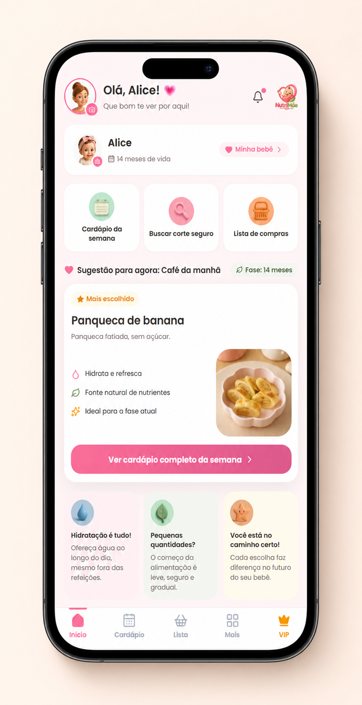

A próxima tela mostrará exemplos e recursos mais próximos desse momento.
Toque em uma opção para continuar
Agora, a prioridade
O que seria mais útil encontrar primeiro?
Escolha o recurso que mais combina com a rotina alimentar da casa.
Última escolha
Como prefere organizar as orientações?
Essa escolha ajuda a destacar a forma mais prática de usar o NutriMãe.
Alimentação segura, com carinho
Organizando suas escolhas...
As respostas servem apenas para personalizar esta experiência. Nenhum cadastro é necessário.
O app completo para a
Alimentação da sua bebê, em um só lugar.
Veja o NutriMãe em ação
🔄 Atualizado toda semana📱 100% prático pro dia a dia💛 Feito com carinho e organização
Cardápios personalizados, receitas práticas, listas de compras, acompanhamento do progresso e atualizações semanais — tudo pensado por nutricionistas para facilitar sua rotina.
Atualizações semanais de cardápios e conteúdos
Plano adaptado à fase do seu bebê
Tudo organizado e pronto para o dia a dia
Desenvolvido por nutricionistas especialistas
Teste por 7 dias. Se não amar, devolvemos seu dinheiro.
Ambiente seguro e seus dados protegidos

Para quem é o NutriMãe
👩
Mães com a rotina corrida
Que querem praticidade sem abrir mão da organização.
👶
Bebês de 6 meses a 2 anos
Cardápios e cortes por fase, desde a introdução alimentar.
🗂️
Famílias que buscam organização
Tudo planejado com antecedência, sem achismo.
🤍
Mães que querem tranquilidade
Tudo pensado para facilitar o dia a dia com o bebê.
Tudo o que você precisa, em um só lugar
📅
Cardápio personalizado
Planos alimentares por fase, adaptados às necessidades do seu bebê.
✂️
Guia de cortes seguros
Saiba exatamente como oferecer cada alimento, em cada fase.
Exporta para WhatsApp
🛒
Lista de compras pronta
Gere sua lista da semana e compartilhe no WhatsApp em 1 toque.
🍽️
Receitas práticas
Fáceis, rápidas e testadas para os dias corridos.
⚠️
Checklist de alergênicos
Saiba o que observar ao introduzir cada novo alimento.
🎧
Audiobooks e conteúdos
Aprenda no seu tempo, ouvindo enquanto cuida da rotina.
💬
Comunidade de mães
Troque experiências com outras mães e com a equipe NutriMãe.
🔄
Novidades toda semana
Novos cardápios, receitas e materiais, sem custo adicional.
Em que fase vocês estão?
O card mais abaixo muda de acordo com a fase escolhida.
Veja como funciona o guia de cortes
Essa demonstração tem só 3 alimentos de exemplo. No acesso completo, a busca cobre o guia inteiro.
Exemplo liberado
🍓
Morango
Faixa etária:a partir dos 6 meses
Corte indicado:Inteiro, com a rama removida
Como oferecer:Na mão do bebê, sentado e supervisionado
🍊
Laranja
🥕
Cenoura
🍠
Batata-doce
🍚
Arroz e feijão
🍐
Pera
Este é apenas um exemplo. No acesso completo, cada alimento vem com a faixa etária, o corte indicado e o modo de oferecer.
Assistente NutriMãerespostas automáticas · não é uma pessoa real
Qual método vocês pretendem seguir?
Algum alergênico já é conhecido?
O Manual S.O.S. é gratuito e sempre será
É um guia de orientação rápida — para você não precisar se preocupar sozinha. Fica disponível para qualquer pessoa, sem precisar de assinatura.
A mesma fase que você já viu funcionando aqui em cima.
3
Receba seu plano
Cardápio e cortes prontos, direto no celular.
4
Acompanhe as novidades
Conteúdo atualizado toda semana, incluso no mesmo acesso.
Quem usa, recomenda
"Eu estava sempre procurando no celular o que preparar e acabava ficando perdida. Gostei muito de ter tudo organizado em um só lugar. Ficou muito mais fácil planejar a alimentação da semana."
Marina Costa — mãe do Leo, 7 meses
"O que mais gostei foi poder acessar pelo celular quando estou preparando a comida. Não preciso ficar procurando informações em vários lugares."
Camila Ribeiro — mãe da Sofia, 9 meses
"Antes eu decidia tudo na última hora. Agora consigo olhar com antecedência e me organizar melhor para a semana. Facilitou bastante minha rotina."
Juliana Mendes — mãe do Theo, 11 meses
"Eu tinha muitas dúvidas sobre como organizar essa nova fase da alimentação. Ter um material estruturado para consultar deixou tudo muito mais simples para mim."
Amanda Castro — mãe da Alice, 6 meses
"Achei muito fácil de usar. Entrei pelo celular e já consegui encontrar o que precisava sem ficar perdida em um monte de informação."
Beatriz Nogueira — mãe do Miguel, 8 meses
"Com bebê pequeno, qualquer coisa que ajude a economizar tempo já faz diferença. Gostei principalmente de conseguir consultar tudo rapidamente durante a rotina."
Letícia Almeida — mãe do Noah, 10 meses
"Eu queria ter uma referência para consultar quando surgisse alguma dúvida durante essa fase. O NutriMãe acabou virando um apoio na minha organização do dia a dia."
Fernanda Lima — mãe da Clara, 14 meses
"Finalmente consegui deixar a alimentação do meu bebê muito mais organizada."
Bruna Fernandes — mãe do Arthur, 12 meses
"Prático, organizado e muito fácil de consultar pelo celular."
Renata Souza — mãe da Maitê, 18 meses
"O que eu mais precisava era de organização. E foi exatamente isso que encontrei."
Carolina Rocha — mãe do Gael, 8 meses
← arraste para o lado para ver mais →
Atualizações toda semana, para você nunca ficar na dúvida
Novos cardápios, receitas e conteúdos, pensados para cada fase e cada desafio.
✓ Novos cardápios toda semana
✓ Receitas práticas sempre atualizadas
✓ Conteúdos exclusivos novos
📅Novos cardápios
🍽️Receitas práticas
🎧Conteúdos novos
Comunidade de mães que entende você
Troque experiências, faça perguntas e receba apoio de outras mães e da equipe NutriMãe.
"Eu queria ter uma referência para consultar quando surgisse alguma dúvida durante essa fase. O NutriMãe acabou virando um apoio na minha organização do dia a dia."
Fernanda Lima — mãe da Clara, 14 meses
Por que escolher o NutriMãe?
Com o NutriMãe
Tudo em um só lugar
Organizado pela fase do bebê
Busca em 2 toques
Atualizações toda semana
Comunidade de apoio
Soluções avulsas
Informação desencontrada
Conteúdo parado no tempo
Falta de organização
Sem direção clara
Cada dúvida em um lugar diferente
Tire suas dúvidas antes de assinar
Vou ter tempo pra usar isso no dia a dia?
O cardápio e os cortes já vêm prontos — é abrir e seguir, sem planejar do zero.
Já testei outros apps parecidos e não continuei usando.
Aqui o conteúdo já é filtrado pela fase exata do seu bebê — não precisa garimpar nada.
Não sou boa com tecnologia, vou saber usar?
A navegação é simples: 2 toques até qualquer alimento, sem menus complicados.
Meu bebê tem alguma restrição — funciona pra ele?
O guia sinaliza alergênicos comuns por alimento, e o assistente já filtra pelo que evitar.
E se eu assinar e não gostar?
7 dias de garantia incondicional. Sem formulário longo, sem precisar justificar.
É seguro colocar meus dados de pagamento?
Pagamento processado com criptografia padrão do mercado. Seus dados nunca são compartilhados.
Sobre o NutriMãe
O NutriMãe nasceu de uma ideia simples: a introdução alimentar fica mais leve quando a mãe tem tudo
organizado em um lugar só. Em vez de juntar informação solta de vários cantos, reunimos cardápio,
lista de compras e o corte indicado de cada alimento — tudo separado por faixa etária e pronto para
consultar com uma mão só, no meio da correria.
Nossa proposta é organização e praticidade no dia a dia, sempre como apoio ao acompanhamento do
pediatra ou nutricionista que cuida do seu bebê — nunca como substituto dele.
Escolha o plano ideal para sua família
Plano Mensal
De R$47
R$ 19,90/mês
no primeiro mês — depois R$29,90/mês
✓ Tudo do NutriMãe
✓ Atualizações semanais
✓ Cancelamento quando quiser
MAIS ESCOLHIDO
Plano Anual
R$ 97à vista
ou 12x de R$9,70 no cartão
✓ Tudo do NutriMãe
✓ Atualizações semanais
✓ Cancelamento quando quiser
Pagamento seguro
Dados protegidos
7 dias de garantia
Teste o NutriMãe por 7 dias. Se não amar, devolvemos seu dinheiro, sem perguntas.
Cancele quando quiser, com 2 toques dentro do seu perfil no app.
Perguntas frequentes
O conteúdo é validado por profissionais de saúde?
O NutriMãe é um material de organização e planejamento da rotina alimentar. Ele serve como apoio prático no dia a dia, mas não substitui a orientação do pediatra ou do nutricionista que acompanha o seu bebê. Em caso de alergia, restrição alimentar ou qualquer dúvida específica sobre o desenvolvimento dele, consulte sempre o profissional responsável.
O conteúdo cobre a introdução alimentar dos 6 aos 24 meses, separado por faixa etária. Se o seu bebê já passou dos 6 meses, dá para começar a usar normalmente a partir da fase em que ele está agora.
Toda semana entram novos cardápios, receitas e conteúdos, sem custo adicional — o mesmo acesso já inclui as novidades.
Sim. O cancelamento é feito a qualquer momento, direto no seu perfil dentro do app (menu Perfil → Gerenciar assinatura), sem multa e sem tempo mínimo de permanência.
No plano mensal, R$19,90 vale só para o primeiro mês. A partir do segundo, o valor passa a ser R$29,90/mês. No plano anual, o valor é R$97 à vista (ou 12x de R$9,70 no cartão), sem reajuste durante o ano.
Sim, você pode falar com a equipe NutriMãe direto pelo app ou pelo e-mail de contato no rodapé desta página.
Você tem 7 dias para acessar tudo e testar na prática. Se concluir que não faz sentido para a sua rotina, basta solicitar dentro desse prazo que o valor é devolvido integralmente, sem necessidade de justificativa.
Organize a alimentação do seu bebê, do jeito mais simples possível.